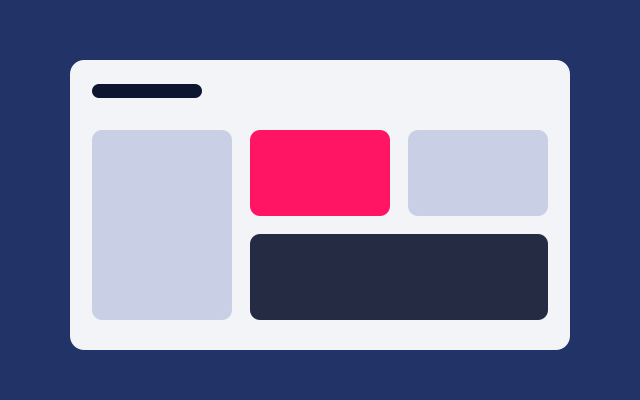
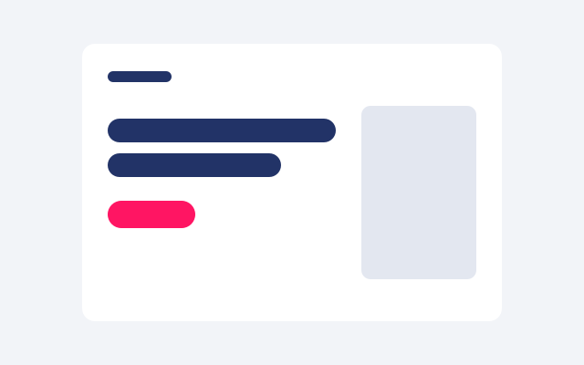
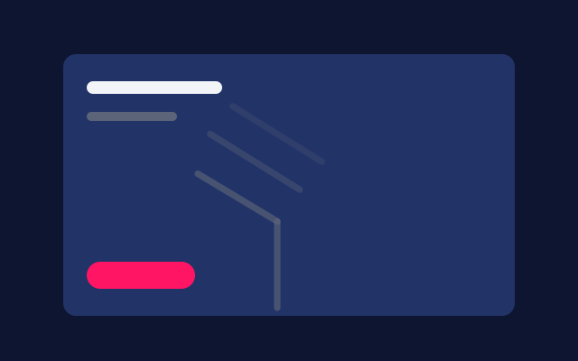
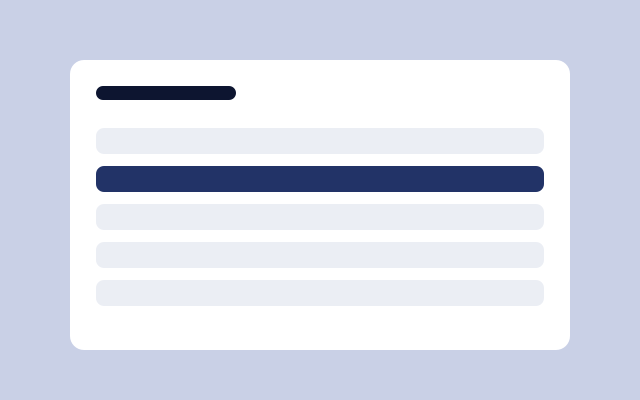
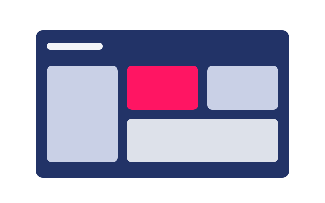

Proyecto A · Cliente
Los reportes que se armaban a mano cada semana ahora se generan solos.

Problema
Qué necesitaba el cliente y qué no funcionaba antes.
Mi rol
Qué hice yo en concreto, sobre todo si fue trabajo en equipo.
Proceso
Las decisiones clave y por qué se tomaron, no solo capturas.


Resultado
Qué se logró, con cifras si las hay.


Uso de IA
Asistido por IA
Qué hizo la IA (por ejemplo, acelerar código y revisión) y qué hice yo: diseño, decisiones y revisión de cada entrega. Herramienta: Claude Code.
Stack
Diseño
Figma · una frase de por qué
Front
HTML, CSS · una frase de por qué
Backend
Python, SQL · una frase de por qué
Infraestructura
Docker · una frase de por qué
¿Tienes un proyecto parecido?
Cuéntame qué necesitas.